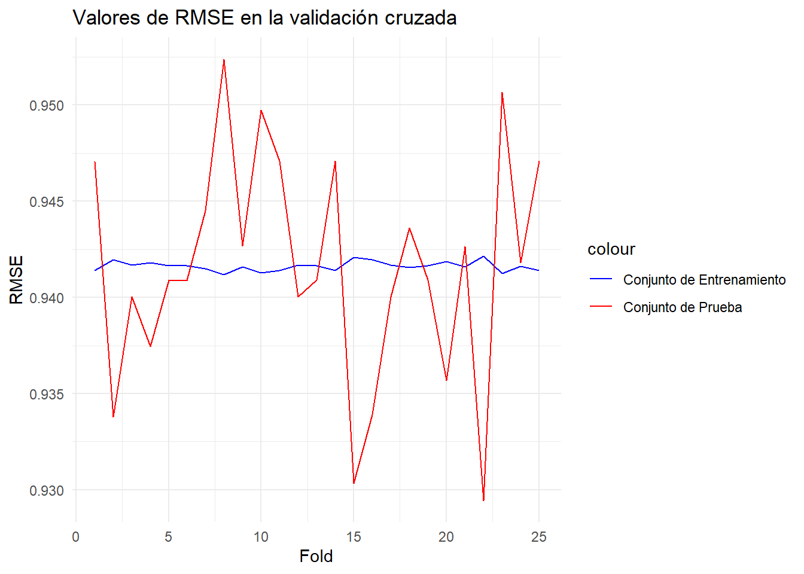
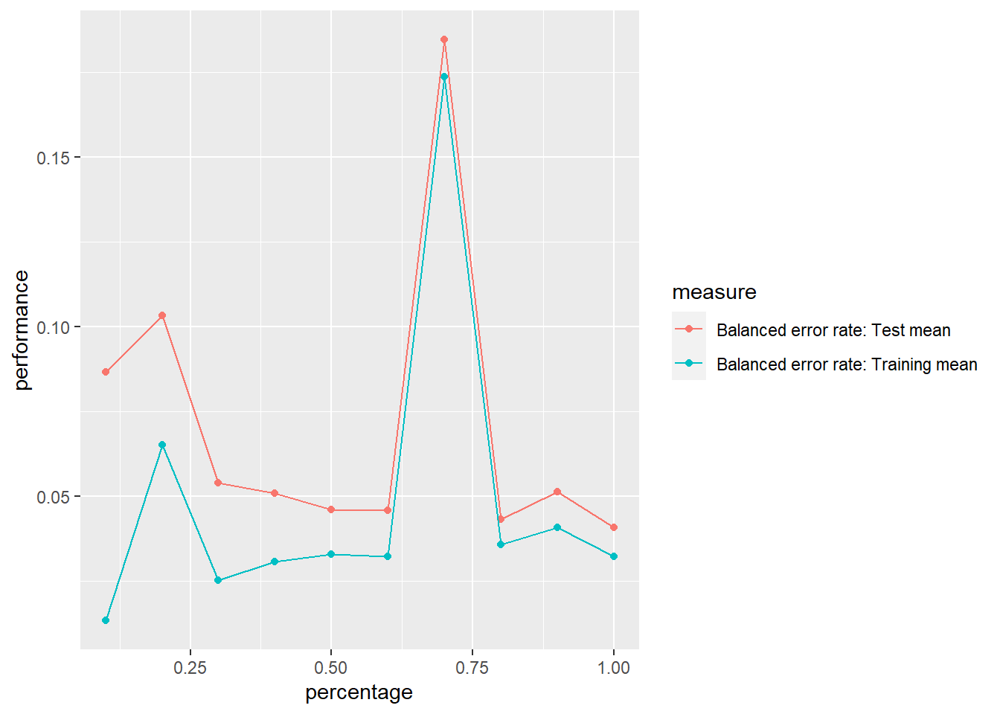
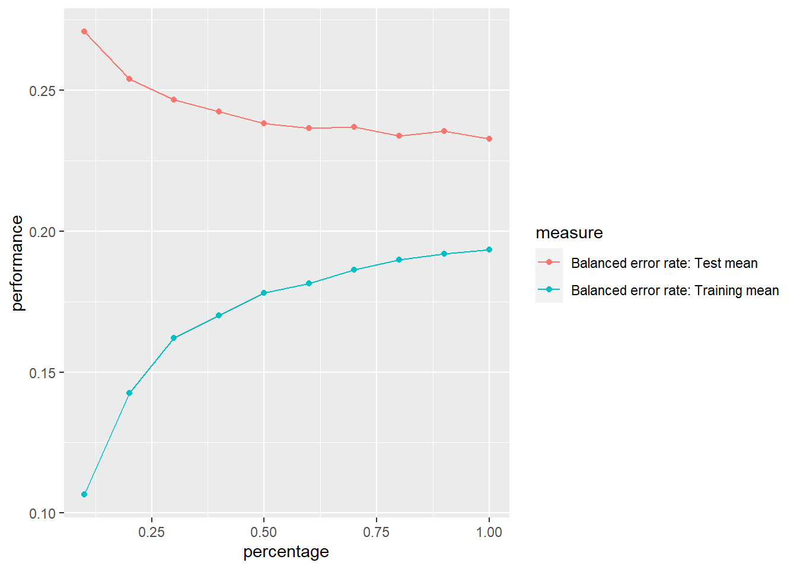
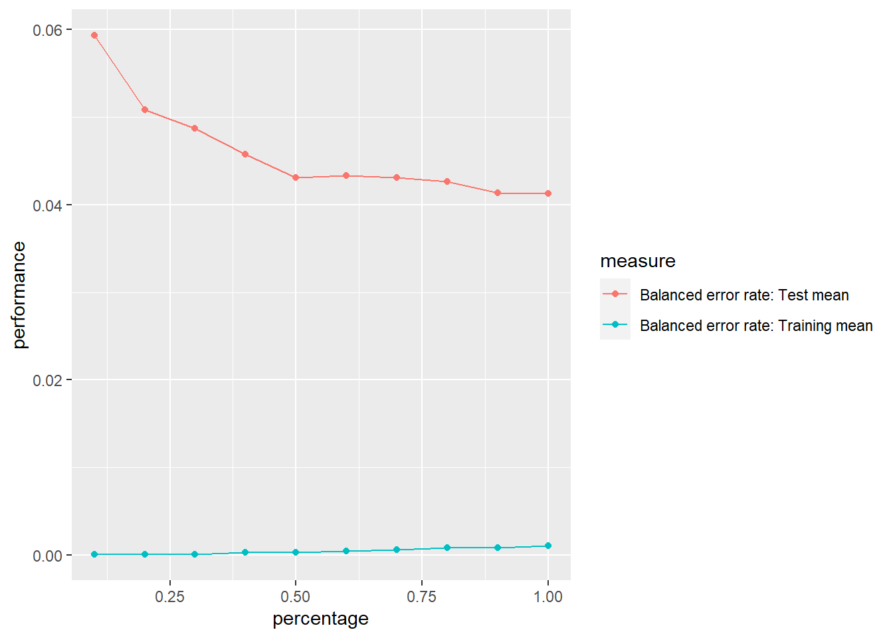

Proyecto
1. Análsis de NA y limpieza
Los datos tienen un encoding en el que se pone un número (como 99 o 999) para indicar que no se tiene información. Por lo tanto es necesario reemplazar estos números por NA.
Además, también se tienen muchas variables con valores numéricos pero que son cualitativas. Por lo tanto, se conviertieron en factores.
Eliminación de variables no significativas
datos <- na.omit(datos)
datos <- select(datos, -SEMGES, -MUPREG, -MUPOCU, -DEPOCU, -MUPREM, -DEPREG, -DEPREM, -TOHITE, -AÑOREG)
# colnames(datos)[2] <- 'ANOREG'Creación de train y test
porcentaje <- 0.7
set.seed(123)
corte <- sample(nrow(datos), nrow(datos) * porcentaje)
train <- datos[corte, ]
test <- datos[-corte, ]Datos necesarios para SVM y XGBoost
set.seed(123)
data <- datos
cualitativas2 <- c('MESREG', 'AÑOREG', 'SEXO', 'DIAOCU', 'MESOCU', 'TIPAR', 'ESCIVM', 'ESCOLAM', 'ASISREC', 'SITIOOCU')
cualitativas2_indices <- which(colnames(data) %in% cualitativas2)
data$TIPO <- ifelse(data$TIPO == "muerto", 1, 0)
encoding_model <- dummyVars(~., data = data[, cualitativas2_indices], fullRank = TRUE)
encoded_data <- predict(encoding_model, newdata = data[, cualitativas2_indices])
final_data <- cbind(data[, !cualitativas2_indices], encoded_data)
final_data$TIPO <- data$TIPO
porcentaje <- 0.7
corte <- sample(nrow(final_data), nrow(final_data) * porcentaje)
train1 <- final_data[corte, ]
test1 <- final_data[-corte, ]SVM
library(dplyr)
# Dividir los datos en conjuntos de entrenamiento y prueba
# modeloSVM <- svm(TIPO~., data = train, kernel = "linear", cost = 10, gamma = 0.1)
modeloSVM <- readRDS("./modelos/modeloSVM.rds")
print(modeloSVM)
Call:
svm(formula = TIPO ~ ., data = train, kernel = "linear", cost = 10,
gamma = 0.1)
Parameters:
SVM-Type: C-classification
SVM-Kernel: linear
cost: 10
Number of Support Vectors: 15031svmpredicciones <- predict(modeloSVM, test)
svmConfusionMatrix <- confusionMatrix(svmpredicciones, test$TIPO)
print(svmConfusionMatrix)Confusion Matrix and Statistics
Reference
Prediction muerto vivo
muerto 3932 737
vivo 0 7482
Accuracy : 0.9393
95% CI : (0.935, 0.9435)
No Information Rate : 0.6764
P-Value [Acc > NIR] : < 2.2e-16
Kappa : 0.8679
Mcnemar's Test P-Value : < 2.2e-16
Sensitivity : 1.0000
Specificity : 0.9103
Pos Pred Value : 0.8422
Neg Pred Value : 1.0000
Prevalence : 0.3236
Detection Rate : 0.3236
Detection Prevalence : 0.3842
Balanced Accuracy : 0.9552
'Positive' Class : muerto
# saveRDS(modeloSVM, "./modelos/modeloSVM.rds")# library(mlr)
# library(ggplot2)
# # Paso 1: Cargar los datos y crear la tarea
# train1$TIPO <- train$TIPO
# datos.task <- makeClassifTask(data = train1, target = "TIPO")
# # Paso 2: Definir la configuración de la validación cruzada
# rin2 <- makeResampleDesc(method = "CV", iters = 10, predict = "both")
# # Paso 3: Definir el clasificador SVM
# lrn <- makeLearner("classif.svm", kernel = "radial", cost = 1, gamma = 0.1)
# # Paso 4: Generar los datos de la curva de aprendizaje
# lc2 <- generateLearningCurveData(
# learners = lrn,
# task = datos.task,
# percs = seq(0.1, 1, by = 0.1),
# measures = list(ber, setAggregation(ber, train.mean)),
# resampling = rin2,
# show.info = FALSE
# )
# # Paso 5: Graficar la curva de aprendizaje
# p <- plotLearningCurve(lc2, facet = "learner")
# pfolds <- createFolds(train$TIPO, k = 25, list = TRUE, returnTrain = TRUE)
rmse_train <- vector(length = length(folds))
rmse_test <- vector(length = length(folds))
for (i in 1:length(folds)){
train_data <- train[folds[[i]],]
test_data <- train[-folds[[i]],]
pred_train <- predict(modeloSVM, newdata = train_data )
pred <- predict(modeloSVM, newdata = test_data)
rmse_train[i] <- confusionMatrix(pred_train, train_data$TIPO)$overall["Accuracy"]
rmse_test[i] <- confusionMatrix(pred, test_data$TIPO)$overall["Accuracy"]
}
rmse_df <- data.frame(
Fold = 1:length(folds),
RMSE_Train = rmse_train,
RMSE_Test = rmse_test
)
# Crear el gráfico de línea
ggplot(rmse_df, aes(x = Fold)) +
geom_line(aes(y = RMSE_Train, color = "Conjunto de Entrenamiento")) +
geom_line(aes(y = RMSE_Test, color = "Conjunto de Prueba")) +
labs(title = "Valores de RMSE en la validación cruzada",
x = "Fold",
y = "RMSE") +
scale_color_manual(values = c("Conjunto de Entrenamiento" = "blue", "Conjunto de Prueba" = "red")) +
theme_minimal()
Red neuronal
porcentaje <- 0.5
corte <- sample(nrow(test), nrow(test) * porcentaje)
test2 <- test[corte, ]
validation2 <- test[-corte,]
library(nnet)
nnet_model <- nnet(TIPO ~ ., data = train, size = 5, softmax = FALSE)# weights: 396
initial value 18339.201738
iter 10 value 17704.378165
iter 20 value 16395.784255
iter 30 value 4893.348033
iter 40 value 4661.117255
iter 50 value 4445.549744
iter 60 value 4288.147367
iter 70 value 4225.320036
iter 80 value 4159.492490
iter 90 value 4095.442639
iter 100 value 4062.365212
final value 4062.365212
stopped after 100 iterations# Make predictions on the test set
predictions1 <- as.factor(predict(nnet_model, newdata = test2, type = "class"))
predictions2 <- as.factor(predict(nnet_model, newdata = validation2, type = "class"))
confusion_matrix <- confusionMatrix(reference = test2$TIPO, data = predictions1)
confusion_matrix2 <- confusionMatrix(reference = validation2$TIPO, data = predictions2)
confusion_matrixConfusion Matrix and Statistics
Reference
Prediction muerto vivo
muerto 1916 290
vivo 30 3839
Accuracy : 0.9473
95% CI : (0.9414, 0.9528)
No Information Rate : 0.6797
P-Value [Acc > NIR] : < 2.2e-16
Kappa : 0.8832
Mcnemar's Test P-Value : < 2.2e-16
Sensitivity : 0.9846
Specificity : 0.9298
Pos Pred Value : 0.8685
Neg Pred Value : 0.9922
Prevalence : 0.3203
Detection Rate : 0.3154
Detection Prevalence : 0.3631
Balanced Accuracy : 0.9572
'Positive' Class : muerto
confusion_matrix2Confusion Matrix and Statistics
Reference
Prediction muerto vivo
muerto 1966 293
vivo 20 3797
Accuracy : 0.9485
95% CI : (0.9426, 0.9539)
No Information Rate : 0.6731
P-Value [Acc > NIR] : < 2.2e-16
Kappa : 0.8869
Mcnemar's Test P-Value : < 2.2e-16
Sensitivity : 0.9899
Specificity : 0.9284
Pos Pred Value : 0.8703
Neg Pred Value : 0.9948
Prevalence : 0.3269
Detection Rate : 0.3236
Detection Prevalence : 0.3718
Balanced Accuracy : 0.9591
'Positive' Class : muerto
datos.task = makeClassifTask(data = train, target = "TIPO")
rin2 = makeResampleDesc(method = "CV", iters = 10, predict = "both")
lrn = makeLearner("classif.nnet", size = 5, decay = 1e-4, maxit = 1000, trace = FALSE)
lc2 = generateLearningCurveData(learners = lrn, task = datos.task,
percs = seq(0.1, 1, by = 0.1),
measures = list(ber, setAggregation(ber, train.mean)), resampling = rin2,
show.info = FALSE)
plotLearningCurve(lc2, facet = "learner")
XGBoost
Parameter tunning
set.seed(123)
train1$TIPO <- train$TIPO
task <- makeClassifTask(data = train1, target = "TIPO")
param_grid <- makeParamSet(
makeDiscreteParam("nrounds", values = seq(100, 500, by = 20)),
makeIntegerParam("max_depth", lower = 3, upper = 10),
makeNumericParam("eta", lower = 0.01, upper = 0.3)
)
control_tune <- makeTuneControlRandom(maxit = 30)
resampling <- makeResampleDesc("CV", iters = 5)
measure <- acc
tuned_model <- tuneParams(
learner = "classif.xgboost", # For classification, use "classif.xgboost"; for regression, use "regr.xgboost"
task = task,
resampling = resampling,
measures = measure,
par.set = param_grid,
control = control_tune,
show.info = TRUE
)[Tune] Started tuning learner classif.xgboost for parameter set: Type len Def Constr Req Tunable
nrounds discrete - - 100,120,140,160,180,200,220,240,260,2... - TRUE
max_depth integer - - 3 to 10 - TRUE
eta numeric - - 0.01 to 0.3 - TRUE
Trafo
nrounds -
max_depth -
eta -With control class: TuneControlRandomImputation value: -0[Tune-x] 1: nrounds=180; max_depth=5; eta=0.125[Tune-y] 1: acc.test.mean=0.7905615; time: 0.2 min[Tune-x] 2: nrounds=340; max_depth=6; eta=0.104[Tune-y] 2: acc.test.mean=0.7907379; time: 0.4 min[Tune-x] 3: nrounds=320; max_depth=6; eta=0.27[Tune-y] 3: acc.test.mean=0.7818495; time: 0.4 min[Tune-x] 4: nrounds=140; max_depth=6; eta=0.273[Tune-y] 4: acc.test.mean=0.7909143; time: 0.2 min[Tune-x] 5: nrounds=280; max_depth=6; eta=0.296[Tune-y] 5: acc.test.mean=0.7839658; time: 0.3 min[Tune-x] 6: nrounds=260; max_depth=7; eta=0.256[Tune-y] 6: acc.test.mean=0.7815322; time: 0.4 min[Tune-x] 7: nrounds=380; max_depth=3; eta=0.165[Tune-y] 7: acc.test.mean=0.7889744; time: 0.2 min[Tune-x] 8: nrounds=240; max_depth=6; eta=0.137[Tune-y] 8: acc.test.mean=0.7906674; time: 0.3 min[Tune-x] 9: nrounds=100; max_depth=4; eta=0.0814[Tune-y] 9: acc.test.mean=0.7387836; time: 0.1 min[Tune-x] 10: nrounds=200; max_depth=3; eta=0.0278[Tune-y] 10: acc.test.mean=0.7050292; time: 0.1 min[Tune-x] 11: nrounds=420; max_depth=3; eta=0.0885[Tune-y] 11: acc.test.mean=0.7800859; time: 0.3 min[Tune-x] 12: nrounds=120; max_depth=4; eta=0.225[Tune-y] 12: acc.test.mean=0.7880574; time: 0.1 min[Tune-x] 13: nrounds=220; max_depth=10; eta=0.16[Tune-y] 13: acc.test.mean=0.7778287; time: 0.5 min[Tune-x] 14: nrounds=480; max_depth=7; eta=0.123[Tune-y] 14: acc.test.mean=0.7845301; time: 0.7 min[Tune-x] 15: nrounds=500; max_depth=4; eta=0.151[Tune-y] 15: acc.test.mean=0.7945118; time: 0.4 min[Tune-x] 16: nrounds=300; max_depth=5; eta=0.199[Tune-y] 16: acc.test.mean=0.7915844; time: 0.3 min[Tune-x] 17: nrounds=120; max_depth=6; eta=0.154[Tune-y] 17: acc.test.mean=0.7883395; time: 0.1 min[Tune-x] 18: nrounds=200; max_depth=5; eta=0.19[Tune-y] 18: acc.test.mean=0.7933127; time: 0.2 min[Tune-x] 19: nrounds=220; max_depth=3; eta=0.0925[Tune-y] 19: acc.test.mean=0.7603697; time: 0.1 min[Tune-x] 20: nrounds=120; max_depth=8; eta=0.0218[Tune-y] 20: acc.test.mean=0.7121186; time: 0.2 min[Tune-x] 21: nrounds=340; max_depth=4; eta=0.0138[Tune-y] 21: acc.test.mean=0.7073923; time: 0.3 min[Tune-x] 22: nrounds=300; max_depth=3; eta=0.218[Tune-y] 22: acc.test.mean=0.7916902; time: 0.2 min[Tune-x] 23: nrounds=320; max_depth=6; eta=0.0848[Tune-y] 23: acc.test.mean=0.7915492; time: 0.4 min[Tune-x] 24: nrounds=160; max_depth=10; eta=0.175[Tune-y] 24: acc.test.mean=0.7823434; time: 0.4 min[Tune-x] 25: nrounds=260; max_depth=7; eta=0.0852[Tune-y] 25: acc.test.mean=0.7887275; time: 0.4 min[Tune-x] 26: nrounds=480; max_depth=10; eta=0.294[Tune-y] 26: acc.test.mean=0.7595231; time: 1.0 min[Tune-x] 27: nrounds=320; max_depth=8; eta=0.297[Tune-y] 27: acc.test.mean=0.7727144; time: 0.5 min[Tune-x] 28: nrounds=380; max_depth=6; eta=0.206[Tune-y] 28: acc.test.mean=0.7838953; time: 0.5 min[Tune-x] 29: nrounds=280; max_depth=9; eta=0.103[Tune-y] 29: acc.test.mean=0.7841421; time: 0.5 min[Tune-x] 30: nrounds=240; max_depth=10; eta=0.292[Tune-y] 30: acc.test.mean=0.7694343; time: 0.5 min[Tune] Result: nrounds=500; max_depth=4; eta=0.151 : acc.test.mean=0.7945118best_params <- tuned_model$x
best_params$nrounds
[1] 500
$max_depth
[1] 4
$eta
[1] 0.1510747xgb_model <- xgboost(data = as.matrix(train1[, -which(colnames(train1) == "TIPO")]),
label = train1[, c('TIPO')],
nrounds = 500, max_depth=4, eta=0.2254931, verbose=0)
# Make predictions
predictions <- predict(xgb_model, as.matrix(test1[, -which(colnames(test1) == "TIPO")]))
predictions <- ifelse(predictions > 0.5, 1, 0)
predictions <- factor(predictions)
# datos2 <- as.data.frame(datos2)
# datos2$TIPO <- factor(datos2$TIPO, levels = c('0', '1'))
# datos2$TIPO
confusion_matrix <- confusionMatrix(reference = as.factor(test1$TIPO), data = predictions)Warning in confusionMatrix.default(reference = as.factor(test1$TIPO), data
= predictions): Levels are not in the same order for reference and data.
Refactoring data to match.confusion_matrixConfusion Matrix and Statistics
Reference
Prediction 0 1
0 0 0
1 8219 3932
Accuracy : 0.3236
95% CI : (0.3153, 0.332)
No Information Rate : 0.6764
P-Value [Acc > NIR] : 1
Kappa : 0
Mcnemar's Test P-Value : <2e-16
Sensitivity : 0.0000
Specificity : 1.0000
Pos Pred Value : NaN
Neg Pred Value : 0.3236
Prevalence : 0.6764
Detection Rate : 0.0000
Detection Prevalence : 0.0000
Balanced Accuracy : 0.5000
'Positive' Class : 0
train1$TIPO <- train$TIPO
datos.task <- makeClassifTask(data = train1, target = "TIPO")
rin2 <- makeResampleDesc(method = "CV", iters = 10, predict = "both")
lrn <- makeLearner("classif.xgboost", nrounds = 500, max_depth = 4, eta = 0.2254931)
lc2 <- generateLearningCurveData(
learners = lrn,
task = datos.task,
percs = seq(0.1, 1, by = 0.1),
measures = list(ber, setAggregation(ber, train.mean)),
resampling = rin2,
show.info = FALSE
)
p <- plotLearningCurve(lc2, facet = "learner")
p
Random Forest
set.seed(123)
modelo_rf <- randomForest(TIPO ~ ., data = train, ntree = 100)
predicciones <- predict(modelo_rf, test)
confusion_matrix <- confusionMatrix(reference=test$TIPO, data = predicciones)
print(confusion_matrix)Confusion Matrix and Statistics
Reference
Prediction muerto vivo
muerto 3808 449
vivo 124 7770
Accuracy : 0.9528
95% CI : (0.9489, 0.9565)
No Information Rate : 0.6764
P-Value [Acc > NIR] : < 2.2e-16
Kappa : 0.8946
Mcnemar's Test P-Value : < 2.2e-16
Sensitivity : 0.9685
Specificity : 0.9454
Pos Pred Value : 0.8945
Neg Pred Value : 0.9843
Prevalence : 0.3236
Detection Rate : 0.3134
Detection Prevalence : 0.3503
Balanced Accuracy : 0.9569
'Positive' Class : muerto
Parameter tuning
classifier <- makeClassifTask(
data=train,
target="TIPO"
)
param_grid <- makeParamSet(makeDiscreteParam("ntree",values= seq(0, 300, by = 25)))
control_grid <- makeTuneControlGrid()
resample <- makeResampleDesc("CV", iters = 3L)
measure <- acc
set.seed(123)
dt_tuneparam <- tuneParams(learner='classif.randomForest',
task=classifier,
resampling = resample,
measures = measure,
par.set=param_grid,
control=control_grid,
show.info = TRUE)[Tune] Started tuning learner classif.randomForest for parameter set: Type len Def Constr Req Tunable
ntree discrete - - 0,25,50,75,100,125,150,175,200,225,25... - TRUE
Trafo
ntree -With control class: TuneControlGridImputation value: -0[Tune-x] Setting hyperpars failed: Error in setHyperPars2.Learner(learner, insert(par.vals, args)) :
0 is not feasible for parameter 'ntree'![Tune-x] 1: ntree=0[Tune-y] 1: acc.test.mean= NA; time: 0.0 min[Tune-x] 2: ntree=25[Tune-y] 2: acc.test.mean=0.9492452; time: 0.0 min[Tune-x] 3: ntree=50[Tune-y] 3: acc.test.mean=0.9517142; time: 0.0 min[Tune-x] 4: ntree=75[Tune-y] 4: acc.test.mean=0.9518552; time: 0.0 min[Tune-x] 5: ntree=100[Tune-y] 5: acc.test.mean=0.9524901; time: 0.1 min[Tune-x] 6: ntree=125[Tune-y] 6: acc.test.mean=0.9521726; time: 0.1 min[Tune-x] 7: ntree=150[Tune-y] 7: acc.test.mean=0.9530897; time: 0.1 min[Tune-x] 8: ntree=175[Tune-y] 8: acc.test.mean=0.9527017; time: 0.1 min[Tune-x] 9: ntree=200[Tune-y] 9: acc.test.mean=0.9524901; time: 0.1 min[Tune-x] 10: ntree=225[Tune-y] 10: acc.test.mean=0.9532660; time: 0.1 min[Tune-x] 11: ntree=250[Tune-y] 11: acc.test.mean=0.9531250; time: 0.1 min[Tune-x] 12: ntree=275[Tune-y] 12: acc.test.mean=0.9528781; time: 0.1 min[Tune-x] 13: ntree=300[Tune-y] 13: acc.test.mean=0.9532308; time: 0.1 min[Tune] Result: ntree=225 : acc.test.mean=0.9532660result_hyperparam <- generateHyperParsEffectData(dt_tuneparam, partial.dep = TRUE)
best_parameters = setHyperPars(
makeLearner("classif.randomForest"),
par.vals = dt_tuneparam$x
)
best_model = train(best_parameters, classifier)
best_params <- getHyperPars(best_model$learner)
best_params$ntree
[1] 225datos.task = makeClassifTask(data = train, target = "TIPO")
rin2 = makeResampleDesc(method = "CV", iters = 10, predict = "both")
lrn = makeLearner("classif.randomForest", ntree = 500)
lc2 = generateLearningCurveData(learners = lrn, task = datos.task,
percs = seq(0.1, 1, by = 0.1),
measures = list(ber, setAggregation(ber, train.mean)), resampling = rin2,
show.info = FALSE)
plotLearningCurve(lc2, facet = "learner")
Regresión logística regularizada
X_train <- as.matrix(select(train1, -TIPO))
y_train <- as.matrix(train1$TIPO)
X_test <- as.matrix(select(test1, -TIPO))
y_test <- as.matrix(test1$TIPO)
ridge_model <- glmnet(X_train, y_train, family = "binomial", alpha = 1, lambda = 0)
# Realizar predicciones en los datos de prueba
y_pred <- predict(ridge_model, newx = X_test, s = "lambda.min", type = "response")
y_pred <- ifelse(y_pred > 0.5, 1, 0)
cf <- confusionMatrix(reference = as.factor(test1$TIPO), data = as.factor(y_pred))
cfConfusion Matrix and Statistics
Reference
Prediction 0 1
0 891 1349
1 7328 2583
Accuracy : 0.2859
95% CI : (0.2779, 0.294)
No Information Rate : 0.6764
P-Value [Acc > NIR] : 1
Kappa : -0.168
Mcnemar's Test P-Value : <2e-16
Sensitivity : 0.10841
Specificity : 0.65692
Pos Pred Value : 0.39777
Neg Pred Value : 0.26062
Prevalence : 0.67641
Detection Rate : 0.07333
Detection Prevalence : 0.18435
Balanced Accuracy : 0.38266
'Positive' Class : 0